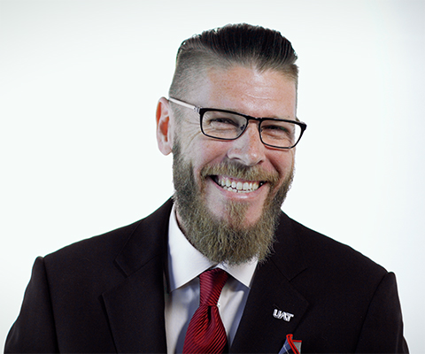

The University of Advancing Technology is the technophile's college experience—a community uniquely suited to provide students passionate about technology an ideal place to live and grow. UAT is a private and family-owned University that merges the values of the traditional academy with the modern technology campus, a fusion that enhances our ability to fulfill the mission of educating students in the fields of advancing technology who innovate for our future.
Learning at UAT extends from our students, staff and faculty to the institution itself. UAT's dedication to learning is reflected in our efforts to create and develop new ways of learning that focus on the personal mission and vision of every member of the UAT community.
UAT strives to foster knowledge creation and achieve academic excellence. We are at the forefront of developing academic programs that tend to be unique among academia or emerge years ahead of other schools, such as Network Security and Robotics and Embedded Systems, as well as our established Game Development majors that merged artistic and programming aspects long before other colleges chose that focus for themselves.
At the heart of UAT's curricula is a technology-infused campus in Tempe, Arizona. This fusion of the traditional academy with the technology-focused curricula creates a distinct, non-exclusionary university in which students learn to value their own uniqueness and the power of technology in education.

UAT is an intimate, private technology University focused on educating students in advancing technology who desire to innovate for our future. Our technology infused, urban campus in Tempe, Ariz., is a technology nexus; a collection of technophiles, tech geeks and mavens of the digital world that evolve into top technology executives, master programmers, cyber warriors, forensic sleuths, robotic engineers, interactive filmmakers, and game innovators for entertainment and government animation applications.
UAT’s academic majors focus on expanding, new and rising technology such as the Advancing Computer Science degree, Cyber Security degree, Digital Maker and Fabrication degree and Robotics and Embedded Systems degree. This technology College has the status of being among a select few 100 percent STEM-based universities in the nation. Our unrivaled computer science degree programs are a benchmark of success within academia. UAT is an ideal environment for technology degree students who value uniqueness and the power of advancing technology as well as the rigors of a traditional education.
Welcome to UAT!
Each day as I walk through the doors of UAT, I feel the energy of our community of bright, driven students and our dedicated faculty and staff. I am continually renewed by the distinct feeling of connection on campus.
We are grateful to our faculty who continually encourage students’ growth through one-on-one mentorship and the bright minds who push themselves to think creatively, test their limits and direct their passion for tech toward innovation. UAT is truly an environment of learning that’s a rare beauty—a college experience not found elsewhere.
We expect our students to outpace the learning and growth of University to propel UAT forward. This growth in advancing technology and higher education has been a multigenerational journey. As state and local colleges are just now climbing the mountain we climbed 20 years ago, we’re on to the next mountain—one that no one knows about yet. Just imagine. 
We invite you to visit our campus, speak with our students and professors and discover the meaning behind our passion for leadership, friendliness, teamwork and having fun. We will always strive to do honorable work and own it without apology and unafraid of judgement. Join us and experience the UAT difference—our values are a way of life and the connective tissue among academia, industry and the technology leaders of tomorrow.
Sincerely,
Jason Pistillo, President